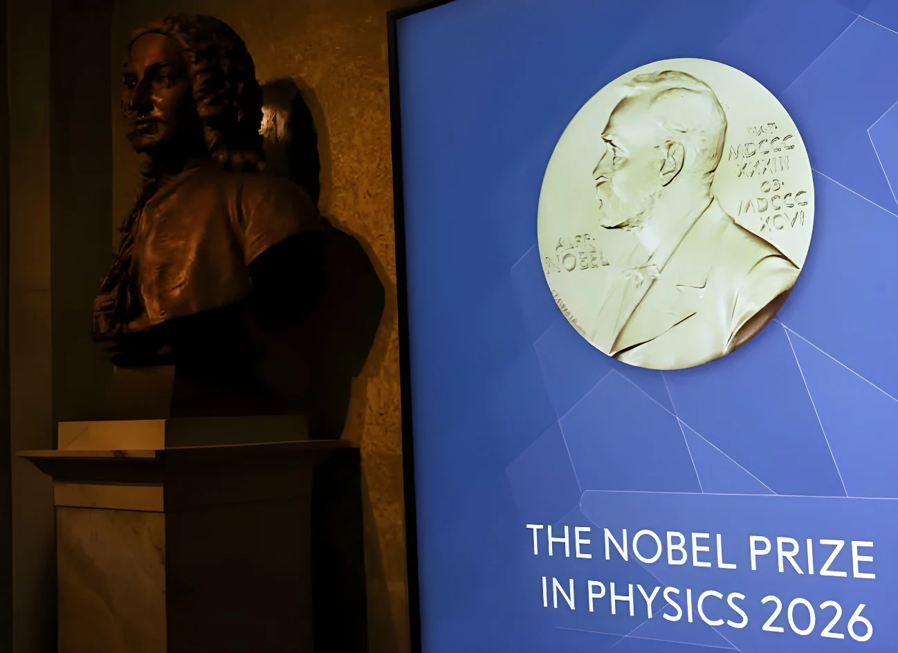

Le 6 octobre 2026, le prix Nobel de physique a été attribué au seul Francis Halzen, physicien belge de l'université du Wisconsin-Madison, « pour ses contributions décisives à l'observatoire de neutrinos IceCube et la découverte de neutrinos de haute énergie d'origine astrophysique ». Il est le premier lauréat unique de la discipline depuis Georges Charpak en 1992. Son idée, née dans les années 1980 : transformer un kilomètre cube de glace antarctique en détecteur géant de ces particules insaisissables.
Les neutrinos sont des particules presque insaisissables : elles traversent la matière sans presque jamais interagir. Pour les attraper, l'observatoire IceCube utilise un kilomètre cube de glace antarctique, au pôle Sud. 86 câbles portent 5 160 modules optiques, enfouis entre 1 450 et 2 450 mètres de profondeur. Lorsqu'un neutrino de haute énergie heurte un atome de la glace, il produit une gerbe de lumière que ces capteurs enregistrent et qui révèle son énergie et sa direction. Construit entre 2004 et 2010, le dispositif a été achevé en 2011.
Francis Halzen, né en 1944 à Tirlemont, en Belgique, formé à l'université de Louvain, enseigne à l'université du Wisconsin-Madison depuis 1972. Il a lancé en 1987 le projet AMANDA, ancêtre d'IceCube, puis défendu la construction du détecteur géant, dont il est le chercheur principal. Joint par téléphone en Italie par la Fondation Nobel, il a réagi : « C'est une grande surprise, je ne m'y attendais certainement pas. »
| Acteur | Rôle |
|---|---|
| Francis Halzen | Chercheur principal d'IceCube, seul lauréat du prix |
| IceCube | Observatoire de neutrinos du pôle Sud, achevé en 2011 |
| Fondation Nobel | Récompense ses « contributions décisives » à IceCube |
Le prix Nobel de physique est attribué à Francis Halzen.
Le neutrino de 2017 est relié au blazar TXS 0506+056, à environ 4 milliards d'années-lumière.
Un neutrino d'environ 300 TeV déclenche une alerte auprès de plusieurs observatoires.
Science publie les premières preuves de 28 neutrinos extraterrestres de haute énergie.
IceCube est achevé, après sept ans de construction.
Halzen lance le projet AMANDA, ancêtre d'IceCube.
Contrairement à la lumière, les neutrinos ne sont ni déviés ni absorbés en route : ceux de haute énergie, environ 100 fois plus énergétiques que les particules accélérées au LHC, viennent donc directement des phénomènes les plus violents de l'Univers. En les captant, IceCube a fondé ce que le comité Nobel appelle un nouveau type d'astronomie, qui complète les télescopes traditionnels et les détecteurs d'ondes gravitationnelles.
Le premier résultat décisif date de 2013, avec 28 neutrinos extraterrestres. Quatre ans plus tard, un neutrino d'environ 300 TeV a permis, grâce à l'alerte lancée à d'autres observatoires, de remonter jusqu'à un blazar, un trou noir supermassif qui projette un jet de particules vers la Terre. Le ministre belge des Affaires étrangères, Maxime Prévot, a salué un « remarquable exploit scientifique » et un « rappel de ce que la coopération internationale peut accomplir ».
« J'espère que cela rend hommage aux gens vraiment courageux qui m'ont rejoint au début de ce projet. »
— Francis Halzen, 6 octobre 2026 (traduction)Le Nobel de physique n'avait plus été attribué à un seul chercheur depuis Georges Charpak en 1992 : tous les prix de 1993 à 2025 ont été partagés. Halzen touche donc seul les 12 millions de couronnes suédoises, soit trois fois la part d'un lauréat dans un prix partagé à trois. Il a lui-même rappelé l'importance de ses collaborateurs, parmi lesquels quatre universités belges participent à IceCube. Le prix de physique suit celui de médecine, attribué la veille à l'optogénétique.
L'histoire d'IceCube est celle d'une patience : près de trente ans séparent l'idée de 1987 des premiers résultats de 2013, et plus encore de la reconnaissance de 2026. En récompensant un seul nom pour un projet collectif, le comité honore autant la vision de l'instrument que l'équipe qui l'a fait fonctionner. L'astronomie des neutrinos, encore jeune, promet de répondre à des questions que la lumière seule ne résout pas, comme l'origine des rayons cosmiques.